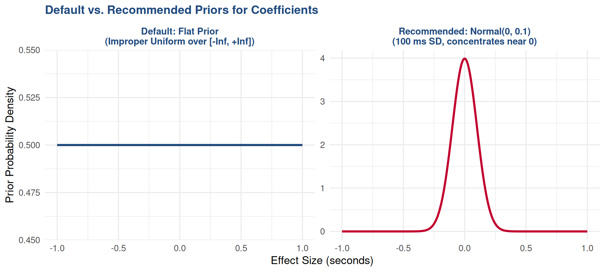
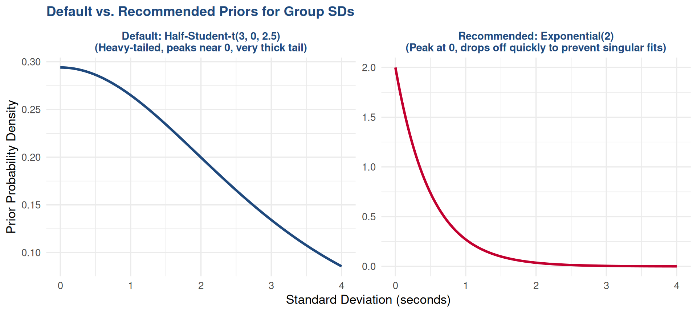
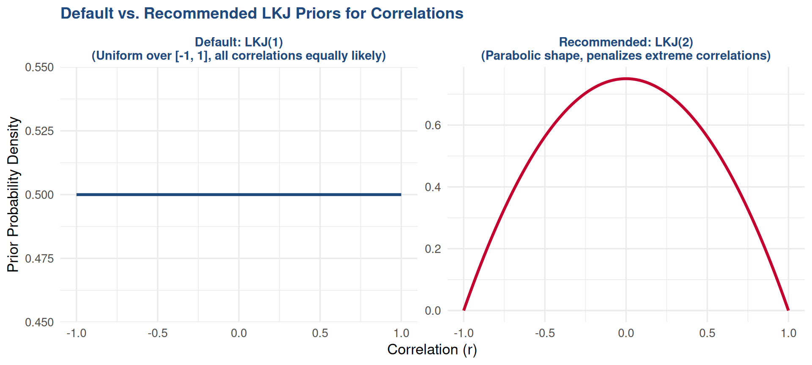
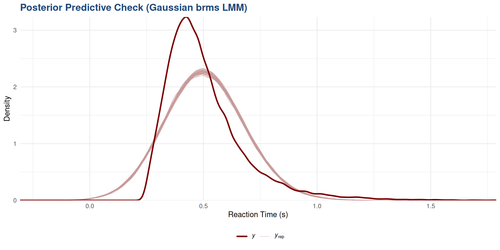
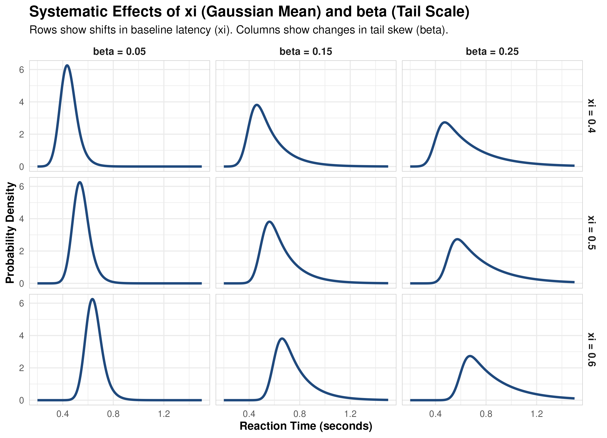
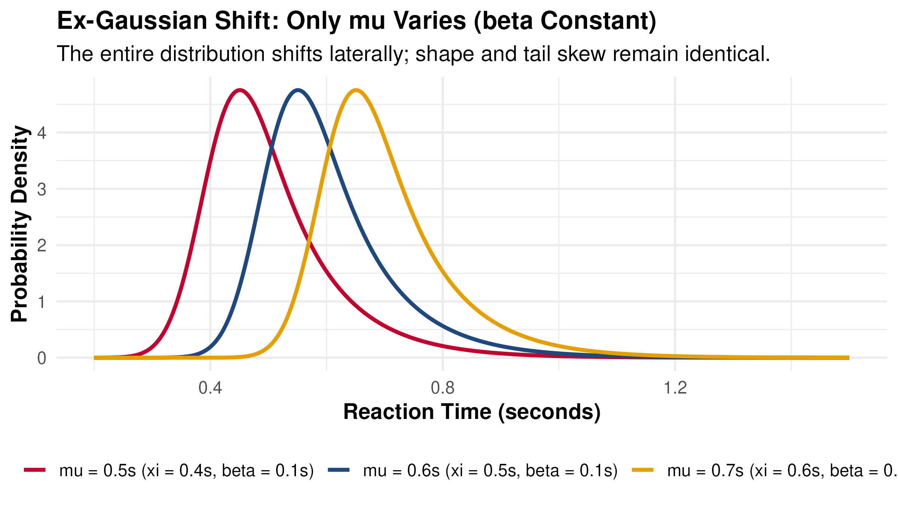
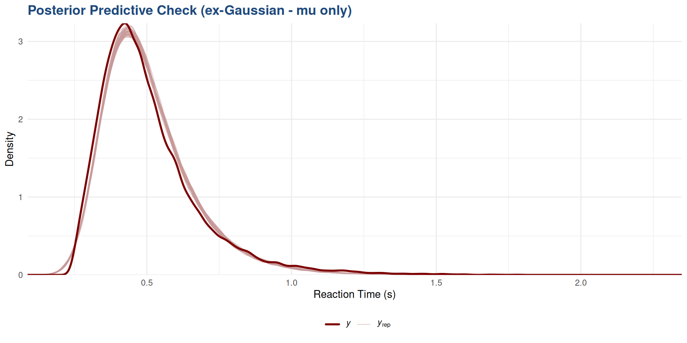
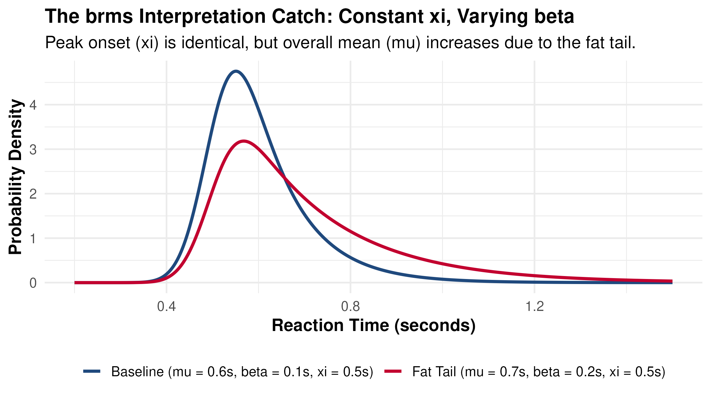
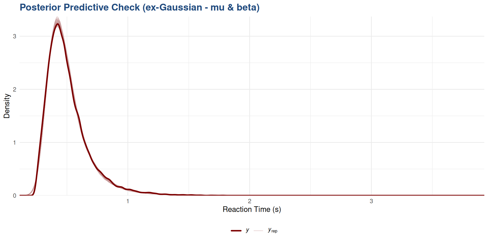

Ex-Gaussian RTs, Bernoulli Accuracy, and Shifted Lognormal Eye Movements
Welcome to our workshop on analyzing data from experiments in cognitive psychology, and linguistics, and education using frequentist and Bayesian linear mixed models.
Here is the plan for this workshop:
lme4brmsbrmsYesterday, we have seen that frequentist models (lme4) suffer from critical limitations:
Bayes’ theorem formalizes the process of updating our beliefs about parameters \(\theta\) in light of new data \(D\): \[P(\theta | D) = \frac{P(D | \theta) P(\theta)}{P(D)}\] Where:
The new probability distribution \(P(\theta | D)\) (the posterior) can become the prior for the next round of data collection, allowing for continuous updating of our beliefs as we gather more evidence.
brms has made Bayesian modeling as easy as fitting an LMM in lme4.
MH compares the posterior probability of the proposed state to the current state:
\[\alpha = \frac{P(\theta_{\text{proposed}} | D)}{P(\theta_{\text{current}} | D)}\]
Let’s expand that using Bayes’ theorem:
\[\alpha = \frac{\frac{P(D | \theta_{\text{proposed}}) P(\theta_{\text{proposed}})}{P(D)}}{\frac{P(D | \theta_{\text{current}}) P(\theta_{\text{current}})}{P(D)}}\]
Notice what happens to the impossible-to-calculate denominator, \(P(D)\): It completely cancels out!
\[\alpha = \frac{P(D | \theta_{\text{proposed}}) P(\theta_{\text{proposed}})}{P(D | \theta_{\text{current}}) P(\theta_{\text{current}})}\]
Concentric rings: target contours. Histograms: empirical margins. Right: trace plot chains.
Bayesian inference combines our Priors (prior beliefs about parameter scales) and Likelihood (observed data) to calculate the Posterior distribution.
We can use the following types of priors:
brms will use these by default for coefficents if no other prior is specified. These priors sound “objective”, but they are actually extremely unrealistic since they consider an effect size of 100000 ms to be equally likely as 10 ms.
class = "b")
Default Prior:
Recommended Prior:
class = "sd")
Default Prior:
Recommended Prior:
exponential(2) (mean = 0.5s) works for RT in seconds. For milliseconds, scale the rate accordingly (e.g. exponential(0.002) for a 500 ms mean).Rule of Thumb: When in doubt, use the default priors, except for fixed effect coefficients (where you should always specify a regularizing prior like normal).
class = "cor")
Default Prior:
Recommended Prior:
brmsTo transition from Frequentist LMMs (lme4) to Bayesian LMMs (brms), we can fit an identical formula structure using a Gaussian family.
library(brms)
library(here)
# Same formula and contrasts as lme4 model
fit_gaussian <- brm(
formula = rt ~ Condition * StimulusType +
(Condition * StimulusType | subject) +
(Condition | item),
data = flanker_sub,
family = gaussian(),
prior = priors_gaussian,
sample_prior = "yes", # this is important if you want to get Bayes factors later
chains = 4, iter = 2000, warmup = 1000,
cores = 4, backend = "cmdstanr",
# if you have enough processor cores, you can speed up the model by using 2 or more cores per chain
# this has diminishing returns -- 2 cores won't be twice as fast as one
threads = threading(2)
)Unlike lme4, brms will compute the full joint posterior distribution using MCMC (Hamiltonian Monte Carlo / NUTS) instead of estimating a single point (Maximum Likelihood).
lme4, but we can also specify more complex structures.lme4. A data frame with all the variables used in the formula.brms has default priors that it uses if no prior is specified.Before running the model, we define regularizing priors to restrict parameters to physiologically plausible bounds and prevent singular fits:
priors_gaussian <- c(
# you should set a prior for fixed effects
prior(normal(0, 0.1), class = "b"), # this is our N(0,1) prior (100 ms SD)
# these are optional, the brms priors usually work well
prior(exponential(2), class = "sd"), # group-level SD variation
prior(lkj(2), class = "cor") # correlation matrix prior
)When in doubt, use the default priors, except for fixed effect coefficients (where you should always specify a regularizing prior like normal(0, 0.1)).
Family: gaussian
Links: mu = identity
Formula: rt ~ Condition * StimulusType + (Condition * StimulusType | subject) + (Condition | item)
Data: flanker_rt_data (Number of observations: 44739)
Draws: 4 chains, each with iter = 2000; warmup = 1000; thin = 1;
total post-warmup draws = 4000
Multilevel Hyperparameters:
~item (Number of levels: 450)
Estimate Est.Error l-95% CI
sd(Intercept) 0.03 0.00 0.02
sd(ConditionCON_vs_AGR) 0.01 0.00 0.00
sd(ConditionCON_AGR_vs_DIS) 0.01 0.00 0.01
cor(Intercept,ConditionCON_vs_AGR) 0.49 0.23 -0.01
cor(Intercept,ConditionCON_AGR_vs_DIS) -0.59 0.13 -0.84
cor(ConditionCON_vs_AGR,ConditionCON_AGR_vs_DIS) -0.35 0.31 -0.86
u-95% CI Rhat Bulk_ESS
sd(Intercept) 0.03 1.01 1532
sd(ConditionCON_vs_AGR) 0.01 1.00 1161
sd(ConditionCON_AGR_vs_DIS) 0.02 1.00 1363
cor(Intercept,ConditionCON_vs_AGR) 0.87 1.00 2671
cor(Intercept,ConditionCON_AGR_vs_DIS) -0.34 1.00 1651
cor(ConditionCON_vs_AGR,ConditionCON_AGR_vs_DIS) 0.33 1.00 578
Tail_ESS
sd(Intercept) 2593
sd(ConditionCON_vs_AGR) 1224
sd(ConditionCON_AGR_vs_DIS) 2149
cor(Intercept,ConditionCON_vs_AGR) 2281
cor(Intercept,ConditionCON_AGR_vs_DIS) 1810
cor(ConditionCON_vs_AGR,ConditionCON_AGR_vs_DIS) 1294
~subject (Number of levels: 109)
Estimate
sd(Intercept) 0.09
sd(ConditionCON_vs_AGR) 0.00
sd(ConditionCON_AGR_vs_DIS) 0.03
sd(StimulusType1) 0.01
sd(ConditionCON_vs_AGR:StimulusType1) 0.00
sd(ConditionCON_AGR_vs_DIS:StimulusType1) 0.00
cor(Intercept,ConditionCON_vs_AGR) -0.13
cor(Intercept,ConditionCON_AGR_vs_DIS) -0.54
cor(ConditionCON_vs_AGR,ConditionCON_AGR_vs_DIS) -0.03
cor(Intercept,StimulusType1) 0.03
cor(ConditionCON_vs_AGR,StimulusType1) -0.06
cor(ConditionCON_AGR_vs_DIS,StimulusType1) -0.23
cor(Intercept,ConditionCON_vs_AGR:StimulusType1) 0.06
cor(ConditionCON_vs_AGR,ConditionCON_vs_AGR:StimulusType1) -0.07
cor(ConditionCON_AGR_vs_DIS,ConditionCON_vs_AGR:StimulusType1) 0.02
cor(StimulusType1,ConditionCON_vs_AGR:StimulusType1) 0.12
cor(Intercept,ConditionCON_AGR_vs_DIS:StimulusType1) 0.25
cor(ConditionCON_vs_AGR,ConditionCON_AGR_vs_DIS:StimulusType1) -0.04
cor(ConditionCON_AGR_vs_DIS,ConditionCON_AGR_vs_DIS:StimulusType1) -0.11
cor(StimulusType1,ConditionCON_AGR_vs_DIS:StimulusType1) -0.11
cor(ConditionCON_vs_AGR:StimulusType1,ConditionCON_AGR_vs_DIS:StimulusType1) 0.06
Est.Error
sd(Intercept) 0.01
sd(ConditionCON_vs_AGR) 0.00
sd(ConditionCON_AGR_vs_DIS) 0.00
sd(StimulusType1) 0.00
sd(ConditionCON_vs_AGR:StimulusType1) 0.00
sd(ConditionCON_AGR_vs_DIS:StimulusType1) 0.00
cor(Intercept,ConditionCON_vs_AGR) 0.30
cor(Intercept,ConditionCON_AGR_vs_DIS) 0.08
cor(ConditionCON_vs_AGR,ConditionCON_AGR_vs_DIS) 0.29
cor(Intercept,StimulusType1) 0.11
cor(ConditionCON_vs_AGR,StimulusType1) 0.30
cor(ConditionCON_AGR_vs_DIS,StimulusType1) 0.11
cor(Intercept,ConditionCON_vs_AGR:StimulusType1) 0.29
cor(ConditionCON_vs_AGR,ConditionCON_vs_AGR:StimulusType1) 0.33
cor(ConditionCON_AGR_vs_DIS,ConditionCON_vs_AGR:StimulusType1) 0.29
cor(StimulusType1,ConditionCON_vs_AGR:StimulusType1) 0.31
cor(Intercept,ConditionCON_AGR_vs_DIS:StimulusType1) 0.28
cor(ConditionCON_vs_AGR,ConditionCON_AGR_vs_DIS:StimulusType1) 0.33
cor(ConditionCON_AGR_vs_DIS,ConditionCON_AGR_vs_DIS:StimulusType1) 0.29
cor(StimulusType1,ConditionCON_AGR_vs_DIS:StimulusType1) 0.28
cor(ConditionCON_vs_AGR:StimulusType1,ConditionCON_AGR_vs_DIS:StimulusType1) 0.33
l-95% CI
sd(Intercept) 0.08
sd(ConditionCON_vs_AGR) 0.00
sd(ConditionCON_AGR_vs_DIS) 0.03
sd(StimulusType1) 0.01
sd(ConditionCON_vs_AGR:StimulusType1) 0.00
sd(ConditionCON_AGR_vs_DIS:StimulusType1) 0.00
cor(Intercept,ConditionCON_vs_AGR) -0.67
cor(Intercept,ConditionCON_AGR_vs_DIS) -0.68
cor(ConditionCON_vs_AGR,ConditionCON_AGR_vs_DIS) -0.57
cor(Intercept,StimulusType1) -0.17
cor(ConditionCON_vs_AGR,StimulusType1) -0.63
cor(ConditionCON_AGR_vs_DIS,StimulusType1) -0.44
cor(Intercept,ConditionCON_vs_AGR:StimulusType1) -0.54
cor(ConditionCON_vs_AGR,ConditionCON_vs_AGR:StimulusType1) -0.69
cor(ConditionCON_AGR_vs_DIS,ConditionCON_vs_AGR:StimulusType1) -0.56
cor(StimulusType1,ConditionCON_vs_AGR:StimulusType1) -0.51
cor(Intercept,ConditionCON_AGR_vs_DIS:StimulusType1) -0.38
cor(ConditionCON_vs_AGR,ConditionCON_AGR_vs_DIS:StimulusType1) -0.66
cor(ConditionCON_AGR_vs_DIS,ConditionCON_AGR_vs_DIS:StimulusType1) -0.65
cor(StimulusType1,ConditionCON_AGR_vs_DIS:StimulusType1) -0.61
cor(ConditionCON_vs_AGR:StimulusType1,ConditionCON_AGR_vs_DIS:StimulusType1) -0.58
u-95% CI
sd(Intercept) 0.10
sd(ConditionCON_vs_AGR) 0.01
sd(ConditionCON_AGR_vs_DIS) 0.04
sd(StimulusType1) 0.02
sd(ConditionCON_vs_AGR:StimulusType1) 0.01
sd(ConditionCON_AGR_vs_DIS:StimulusType1) 0.01
cor(Intercept,ConditionCON_vs_AGR) 0.52
cor(Intercept,ConditionCON_AGR_vs_DIS) -0.37
cor(ConditionCON_vs_AGR,ConditionCON_AGR_vs_DIS) 0.54
cor(Intercept,StimulusType1) 0.24
cor(ConditionCON_vs_AGR,StimulusType1) 0.54
cor(ConditionCON_AGR_vs_DIS,StimulusType1) -0.01
cor(Intercept,ConditionCON_vs_AGR:StimulusType1) 0.61
cor(ConditionCON_vs_AGR,ConditionCON_vs_AGR:StimulusType1) 0.58
cor(ConditionCON_AGR_vs_DIS,ConditionCON_vs_AGR:StimulusType1) 0.59
cor(StimulusType1,ConditionCON_vs_AGR:StimulusType1) 0.67
cor(Intercept,ConditionCON_AGR_vs_DIS:StimulusType1) 0.73
cor(ConditionCON_vs_AGR,ConditionCON_AGR_vs_DIS:StimulusType1) 0.60
cor(ConditionCON_AGR_vs_DIS,ConditionCON_AGR_vs_DIS:StimulusType1) 0.51
cor(StimulusType1,ConditionCON_AGR_vs_DIS:StimulusType1) 0.46
cor(ConditionCON_vs_AGR:StimulusType1,ConditionCON_AGR_vs_DIS:StimulusType1) 0.65
Rhat
sd(Intercept) 1.00
sd(ConditionCON_vs_AGR) 1.00
sd(ConditionCON_AGR_vs_DIS) 1.00
sd(StimulusType1) 1.00
sd(ConditionCON_vs_AGR:StimulusType1) 1.00
sd(ConditionCON_AGR_vs_DIS:StimulusType1) 1.00
cor(Intercept,ConditionCON_vs_AGR) 1.00
cor(Intercept,ConditionCON_AGR_vs_DIS) 1.00
cor(ConditionCON_vs_AGR,ConditionCON_AGR_vs_DIS) 1.02
cor(Intercept,StimulusType1) 1.00
cor(ConditionCON_vs_AGR,StimulusType1) 1.06
cor(ConditionCON_AGR_vs_DIS,StimulusType1) 1.00
cor(Intercept,ConditionCON_vs_AGR:StimulusType1) 1.00
cor(ConditionCON_vs_AGR,ConditionCON_vs_AGR:StimulusType1) 1.00
cor(ConditionCON_AGR_vs_DIS,ConditionCON_vs_AGR:StimulusType1) 1.00
cor(StimulusType1,ConditionCON_vs_AGR:StimulusType1) 1.00
cor(Intercept,ConditionCON_AGR_vs_DIS:StimulusType1) 1.00
cor(ConditionCON_vs_AGR,ConditionCON_AGR_vs_DIS:StimulusType1) 1.00
cor(ConditionCON_AGR_vs_DIS,ConditionCON_AGR_vs_DIS:StimulusType1) 1.00
cor(StimulusType1,ConditionCON_AGR_vs_DIS:StimulusType1) 1.00
cor(ConditionCON_vs_AGR:StimulusType1,ConditionCON_AGR_vs_DIS:StimulusType1) 1.00
Bulk_ESS
sd(Intercept) 315
sd(ConditionCON_vs_AGR) 1139
sd(ConditionCON_AGR_vs_DIS) 1747
sd(StimulusType1) 1935
sd(ConditionCON_vs_AGR:StimulusType1) 1303
sd(ConditionCON_AGR_vs_DIS:StimulusType1) 1323
cor(Intercept,ConditionCON_vs_AGR) 6404
cor(Intercept,ConditionCON_AGR_vs_DIS) 1476
cor(ConditionCON_vs_AGR,ConditionCON_AGR_vs_DIS) 178
cor(Intercept,StimulusType1) 2299
cor(ConditionCON_vs_AGR,StimulusType1) 85
cor(ConditionCON_AGR_vs_DIS,StimulusType1) 1529
cor(Intercept,ConditionCON_vs_AGR:StimulusType1) 6631
cor(ConditionCON_vs_AGR,ConditionCON_vs_AGR:StimulusType1) 3147
cor(ConditionCON_AGR_vs_DIS,ConditionCON_vs_AGR:StimulusType1) 6138
cor(StimulusType1,ConditionCON_vs_AGR:StimulusType1) 4680
cor(Intercept,ConditionCON_AGR_vs_DIS:StimulusType1) 5345
cor(ConditionCON_vs_AGR,ConditionCON_AGR_vs_DIS:StimulusType1) 3200
cor(ConditionCON_AGR_vs_DIS,ConditionCON_AGR_vs_DIS:StimulusType1) 6287
cor(StimulusType1,ConditionCON_AGR_vs_DIS:StimulusType1) 5899
cor(ConditionCON_vs_AGR:StimulusType1,ConditionCON_AGR_vs_DIS:StimulusType1) 2690
Tail_ESS
sd(Intercept) 562
sd(ConditionCON_vs_AGR) 2269
sd(ConditionCON_AGR_vs_DIS) 2629
sd(StimulusType1) 2900
sd(ConditionCON_vs_AGR:StimulusType1) 2278
sd(ConditionCON_AGR_vs_DIS:StimulusType1) 1681
cor(Intercept,ConditionCON_vs_AGR) 2104
cor(Intercept,ConditionCON_AGR_vs_DIS) 2146
cor(ConditionCON_vs_AGR,ConditionCON_AGR_vs_DIS) 466
cor(Intercept,StimulusType1) 2711
cor(ConditionCON_vs_AGR,StimulusType1) 171
cor(ConditionCON_AGR_vs_DIS,StimulusType1) 2760
cor(Intercept,ConditionCON_vs_AGR:StimulusType1) 3056
cor(ConditionCON_vs_AGR,ConditionCON_vs_AGR:StimulusType1) 3004
cor(ConditionCON_AGR_vs_DIS,ConditionCON_vs_AGR:StimulusType1) 2357
cor(StimulusType1,ConditionCON_vs_AGR:StimulusType1) 2852
cor(Intercept,ConditionCON_AGR_vs_DIS:StimulusType1) 2398
cor(ConditionCON_vs_AGR,ConditionCON_AGR_vs_DIS:StimulusType1) 3175
cor(ConditionCON_AGR_vs_DIS,ConditionCON_AGR_vs_DIS:StimulusType1) 2730
cor(StimulusType1,ConditionCON_AGR_vs_DIS:StimulusType1) 2874
cor(ConditionCON_vs_AGR:StimulusType1,ConditionCON_AGR_vs_DIS:StimulusType1) 2958
Regression Coefficients:
Estimate Est.Error l-95% CI u-95% CI Rhat
Intercept 0.51 0.01 0.49 0.52 1.02
ConditionCON_vs_AGR -0.00 0.00 -0.01 0.00 1.00
ConditionCON_AGR_vs_DIS -0.05 0.00 -0.06 -0.04 1.00
StimulusType1 0.01 0.00 0.00 0.01 1.00
ConditionCON_vs_AGR:StimulusType1 0.00 0.00 -0.00 0.00 1.00
ConditionCON_AGR_vs_DIS:StimulusType1 0.00 0.00 -0.00 0.00 1.00
Bulk_ESS Tail_ESS
Intercept 135 214
ConditionCON_vs_AGR 4482 2892
ConditionCON_AGR_vs_DIS 538 1338
StimulusType1 1946 2586
ConditionCON_vs_AGR:StimulusType1 4064 2672
ConditionCON_AGR_vs_DIS:StimulusType1 4003 2900
Further Distributional Parameters:
Estimate Est.Error l-95% CI u-95% CI Rhat Bulk_ESS Tail_ESS
sigma 0.15 0.00 0.15 0.15 1.00 9430 2566
Draws were sampled using sample(hmc). For each parameter, Bulk_ESS
and Tail_ESS are effective sample size measures, and Rhat is the potential
scale reduction factor on split chains (at convergence, Rhat = 1).| Estimate | Est.Error | l-95% CI | u-95% CI | |
|---|---|---|---|---|
| Intercept | 0.507 | 0.009 | 0.489 | 0.524 |
| ConditionCON_vs_AGR | -0.004 | 0.002 | -0.007 | 0.000 |
| ConditionCON_AGR_vs_DIS | -0.052 | 0.004 | -0.059 | -0.045 |
| StimulusType1 | 0.006 | 0.002 | 0.002 | 0.010 |
| ConditionCON_vs_AGR:StimulusType1 | 0.000 | 0.002 | -0.003 | 0.004 |
| ConditionCON_AGR_vs_DIS:StimulusType1 | 0.001 | 0.002 | -0.002 | 0.004 |
lme4 model, but now we have credible intervals instead of confidence intervals.Unlike frequentist point estimates, Bayesian inference gives us a full probability distribution (the posterior) for each parameter. We can interpret this distribution in several intuitive ways:
To test if the discordant flanker condition (DIS) slows down reaction times compared to the average of congruent and control conditions (CON and AGR), we check the posterior credible interval for: \[\beta_{\text{CON_AGR_vs_DIS}} = \frac{\text{CON} + \text{AGR}}{2} - \text{DIS}\]
Rather than a binary “significant / not significant” decision, we can calculate the exact probability that the interference effect is negative (i.e., that DIS is slower than AGR/CON).
[1] "Probability of Direction (pd): 100 %"The Bayes Factor (\(BF_{10}\)) compares the relative evidence for the alternative hypothesis (\(H_1\): \(\beta \neq 0\)) versus the null hypothesis (\(H_0\): \(\beta = 0\)). In brms, the standard way to compute Savage-Dickey Bayes Factors is using the hypothesis() command.
Hypothesis Tests for class b:
Hypothesis Estimate Est.Error CI.Lower CI.Upper Evid.Ratio
1 (ConditionCON_AGR... = 0 -0.05 0 -0.06 -0.04 NA
Post.Prob Star
1 NA *
---
'CI': 90%-CI for one-sided and 95%-CI for two-sided hypotheses.
'*': For one-sided hypotheses, the posterior probability exceeds 95%;
for two-sided hypotheses, the value tested against lies outside the 95%-CI.
Posterior probabilities of point hypotheses assume equal prior probabilities.Evid.Ratio (Bayes Factor):
Evid.Ratio column shows the Savage-Dickey Bayes Factor.sample_prior = "yes" to the brm() command when fitting the model!NA if the model was fit without saving prior samples.A critical step in Bayesian workflow is verifying that the chains have successfully converged and explored the target distribution.
| Rhat | Bulk_ESS | Tail_ESS | |
|---|---|---|---|
| Intercept | 1.02 | 135.13 | 214.05 |
| ConditionCON_vs_AGR | 1.00 | 4482.44 | 2892.35 |
| ConditionCON_AGR_vs_DIS | 1.00 | 537.98 | 1337.69 |
| StimulusType1 | 1.00 | 1946.49 | 2586.46 |
| ConditionCON_vs_AGR:StimulusType1 | 1.00 | 4063.60 | 2671.72 |
| ConditionCON_AGR_vs_DIS:StimulusType1 | 1.00 | 4002.67 | 2899.79 |
In addition to \(\hat{R}\) and ESS, we must check for Hamiltonian Monte Carlo-specific diagnostics that indicate numerical sampling instabilities:
adapt_delta: E.g., control = list(adapt_delta = 0.95) or 0.99. This forces the sampler to take smaller, more precise steps.max_treedepth: E.g., control = list(max_treedepth = 15).To evaluate how well our model’s Gaussian assumption matches the actual response time distribution, we can perform a Posterior Predictive Check:
library(bayesplot)
library(ggplot2)
color_scheme_set("red")
pp_check(fit_gaussian, ndraws = 50) +
theme_minimal(base_family = "sans") +
labs(
title = "Posterior Predictive Check (Gaussian brms LMM)",
x = "Reaction Time (s)",
y = "Density"
) +
theme(
plot.title = element_text(face = "bold", color = "#1F497D", size = 14),
legend.position = "bottom"
)
Notice that because reaction times are right-skewed, the Gaussian model’s replicates (thin lines) fail to capture the long right-tail of the raw data, and instead fits a much wider Gaussian distribution. We should try the ex-Gaussian.
Human reaction times are rarely symmetrical. They are heavily right-skewed. The ex-Gaussian distribution represents this shape by combining a Gaussian (normal) component and an exponential component:
\[\text{RT} \sim \text{Normal}(\text{Gaussian}) + \text{Exponential}\]
The distribution is characterized by three parameters: * \(\xi\) (Gaussian Mean): Center of the normal component (reflects core decision onset and baseline foveal/cognitive latency). * \(\sigma\) (Gaussian SD): Standard deviation of the normal component (reflects foveal processing variance). * \(\beta\) (or \(\tau\), Exponential Scale): Scale/mean of the exponential component (reflects the slow decision tail, often linked to lapses of attention or threshold leakage).
\[\text{Overall Mean } (M) = \xi + \beta\]
To understand how the Gaussian center (\(\xi\)) and the exponential tail (\(\beta\)) independently shape the density curve, we can systematically vary them across a grid:

brms ParameterizationIn most descriptions of the ex-Gaussian distribution, it is parameterized using \((\xi, \sigma, \beta)\) to represent the independent Gaussian and exponential components.
However, brms does it differently:
brms: You model \(\mu\) (the overall mean of the entire distribution) and \(\beta\) (the scale of the exponential component) directly.\[\xi = \mu - \beta\]
When only mu varies in brms (while the exponential tail scale beta remains constant):

Since \(\beta\) is constant and \(\mu\) increases, the Gaussian center also increases (\(\xi = \mu - \beta\)). The entire distribution shifts laterally; the shape and right-tail skew remain identical.
brms will assume that \(\beta\) and \(\sigma\) are the same for every observation and only \(\mu\) is influenced by fixed and random effects.We will define regularizing priors for both the Gaussian core (\(\mu\)) and the exponential tail (\(\beta\)) of our reaction times before fitting the model in brms:
library(brms)
library(tidyverse)
# Define regularizing priors on the log/raw scale
priors_exg <- c(
prior(normal(0, 0.1), class = "b"), # Fixed effects on RT
prior(exponential(2), class = "sd"), # Subject/Item variation
prior(lkj(2), class = "cor"), # Random correlation matrix
# Priors for the exponential parameter beta
prior(normal(0, 0.3), class = "b", dpar = "beta")
)# Fit ex-Gaussian model on Flanker Exp 1 correct RTs
blmm_rt <- brm(
formula = bf(
rt ~ Condition * StimulusType + (Condition * StimulusType | subject) + (Condition | item),
beta ~ Condition * StimulusType + (Condition * StimulusType | subject) + (Condition | item)
),
data = flanker_rt_data,
family = exgaussian(),
prior = priors_exg,
chains = 4, iter = 4000, warmup = 2000,
# if you get divergent transitions, try adapt_delta = 0.95
control = list(adapt_delta = 0.8),
cores = 4, backend = "cmdstanr"
)| Estimate | Est.Error | l-95% CI | u-95% CI | Rhat | Bulk_ESS | Tail_ESS | |
|---|---|---|---|---|---|---|---|
| Intercept | 0.504 | 0.006 | 0.491 | 0.516 | 1.017 | 153.506 | 324.232 |
| ConditionCON_vs_AGR | -0.003 | 0.001 | -0.005 | -0.001 | 1.000 | 8065.715 | 5606.836 |
| ConditionCON_AGR_vs_DIS | -0.027 | 0.002 | -0.031 | -0.022 | 1.005 | 559.963 | 1740.645 |
| StimulusType1 | 0.004 | 0.001 | 0.001 | 0.007 | 1.001 | 2682.190 | 4334.151 |
| ConditionCON_vs_AGR:StimulusType1 | -0.001 | 0.001 | -0.003 | 0.001 | 1.000 | 8252.982 | 5755.333 |
| ConditionCON_AGR_vs_DIS:StimulusType1 | -0.001 | 0.001 | -0.003 | 0.001 | 1.000 | 5656.078 | 6039.009 |
To evaluate the fit of the ex-Gaussian model with fixed/random effects restricted to the mean \(\mu\):

Notice how much better the ex-Gaussian family captures the raw data’s right-skewed tail compared to the standard Gaussian model!
brms, you can specify a regression equation for every distribution parameter!brms, be careful how you interpret the results:If your experimental condition only increases the exponential tail (\(\beta\)) while the core Gaussian component (\(\xi\)) remains completely unchanged, brms will show a positive coefficient for both mu and beta because: \[\mu = \xi + \beta\]
When the core Gaussian component xi remains completely constant, but the tail skew beta increases:

The peak/onset remains at the exact same location, but the right tail becomes fatter. In brms, because \(\mu = \xi + \beta\), the overall mean \(\mu\) increases, resulting in positive coefficients for both mu and beta!
Here are the coefficients for both \(\mu\) (mean) and \(\beta\) (exponential tail scale) from the full model:
| Estimate | Est.Error | l-95% CI | u-95% CI | Rhat | Bulk_ESS | Tail_ESS | |
|---|---|---|---|---|---|---|---|
| Intercept | 0.505 | 0.008 | 0.489 | 0.521 | 1.015 | 167.898 | 421.877 |
| beta_Intercept | -2.048 | 0.031 | -2.111 | -1.989 | 1.012 | 421.849 | 778.370 |
| ConditionCON_vs_AGR | -0.003 | 0.001 | -0.006 | 0.000 | 1.000 | 5794.386 | 3859.515 |
| ConditionCON_AGR_vs_DIS | -0.051 | 0.003 | -0.056 | -0.046 | 1.005 | 512.686 | 1342.253 |
| StimulusType1 | 0.006 | 0.002 | 0.003 | 0.010 | 1.000 | 2669.616 | 3041.321 |
| ConditionCON_vs_AGR:StimulusType1 | 0.000 | 0.001 | -0.002 | 0.003 | 1.001 | 5472.649 | 3522.651 |
| ConditionCON_AGR_vs_DIS:StimulusType1 | 0.000 | 0.002 | -0.004 | 0.003 | 1.002 | 5857.252 | 3582.594 |
| beta_ConditionCON_vs_AGR | -0.003 | 0.015 | -0.031 | 0.025 | 1.000 | 6642.590 | 2993.674 |
| beta_ConditionCON_AGR_vs_DIS | -0.252 | 0.013 | -0.277 | -0.227 | 0.999 | 7024.408 | 3625.128 |
| beta_StimulusType1 | 0.028 | 0.007 | 0.013 | 0.041 | 1.001 | 7218.173 | 2944.336 |
| beta_ConditionCON_vs_AGR:StimulusType1 | 0.022 | 0.015 | -0.007 | 0.051 | 1.000 | 7889.874 | 3163.014 |
| beta_ConditionCON_AGR_vs_DIS:StimulusType1 | 0.017 | 0.013 | -0.008 | 0.043 | 1.001 | 5975.585 | 3306.686 |
To evaluate the full predictive accuracy of the ex-Gaussian model predicting both \(\mu\) and \(\beta\):

The fit is almost perfect! By allowing both \(\mu\) and \(\beta\) to vary, the model can flexibly capture changes in both the core Gaussian latency and the exponential tail, resulting in an excellent match to the raw RT distribution. Also, now we gain insight into where in the distribution our experimental effects are occurring (core latency vs. tail skew).
brms to fit Bayesian linear mixed models with the same formula syntax as lme4, but with the added flexibility of specifying priors and modeling different likelihood families (e.g. ex-Gaussian for RTs).brms using hypothesis(..., sample_prior="yes").brms and Stan, you must verify that chains have converged by ensuring \(\hat{R} \le 1.01\) and ESS \(> 1000\). Your model must not have any divergent transitions (try increasing adapt_delta). If you get warnings about exceeding maximum treedepth limits, your model may be very inefficient and require simplification or stronger priors.pp_check()) to visually confirm that the model’s posterior predictions accurately recreate the shape of the observed data.Try to apply the concepts from this session to your own data! Fit a Bayesian linear mixed model using brms with appropriate priors, check convergence diagnostics, and perform posterior predictive checks to evaluate model fit. Write a results section interpreting the credible intervals, probability of direction, and Bayes factors for your key contrasts. See Serrano-Carot et al. (2026) for an example of how to write up Bayesian results.